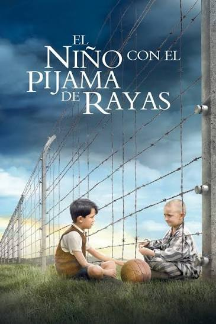

Bruno
Interpretado por Asa Butterfield
Niño alemán de ocho años. Es curioso y desea explorar el mundo que lo rodea. Su desconocimiento de la persecución nazi influye en la manera en que comprende lo que sucede.

HISTÓRICO · DRAMA · SEGUNDA GUERRA MUNDIAL
Durante la Segunda Guerra Mundial, Bruno, un niño alemán, se muda con su familia cerca de un campo de concentración nazi. Allí conoce a Shmuel, un niño judío prisionero, y entre ambos surge una amistad marcada por las barreras de la persecución y la violencia.
The Boy in the Striped Pyjamas
2008
Mark Herman
Mark Herman
Reino Unido y Estados Unidos
94 minutos
Drama histórico
La novela de John Boyne, publicada en 2006
Asa Butterfield, Jack Scanlon, David Thewlis, Vera Farmiga y Amber Beattie
James Horner
La historia comienza en Berlín, durante la Segunda Guerra Mundial. Bruno es un niño de ocho años que vive con su familia y disfruta jugar con sus amigos. Sin embargo, su vida cambia cuando su padre, un oficial nazi, recibe un nuevo cargo.
Debido al trabajo de su padre, toda la familia se traslada a una vivienda aislada, situada cerca de un campo de concentración. Bruno se siente triste y aburrido porque ha tenido que abandonar a sus amigos y su antigua casa.
Desde la ventana de su habitación, Bruno observa a varias personas detrás de una cerca. Como desconoce lo que sucede en aquel lugar, no comprende que se trata de prisioneros perseguidos por el régimen nazi.
Un día, mientras explora los alrededores de su casa, Bruno llega hasta la cerca del campo y conoce a Shmuel, un niño judío de su misma edad que se encuentra prisionero.
A pesar de la separación física y social, los dos niños comienzan a conversar y desarrollan una amistad. Bruno visita a Shmuel en distintas ocasiones, sin comprender completamente las condiciones de violencia y persecución que enfrenta su amigo.
Mientras tanto, la familia de Bruno comienza a experimentar conflictos internos relacionados con el trabajo del padre y las acciones del régimen nazi. Su madre descubre aspectos de la realidad del campo que la perturban.
Hacia el final, Bruno decide ayudar a Shmuel a buscar a su padre desaparecido. Para hacerlo, se coloca ropa de prisionero y entra al campo a través de un espacio bajo la cerca.
Ambos niños son conducidos junto con otros prisioneros hacia una cámara de gas, donde mueren. La familia de Bruno descubre demasiado tarde lo sucedido. El desenlace busca mostrar las consecuencias devastadoras de la persecución y la violencia nazi.
Interpretado por Asa Butterfield
Niño alemán de ocho años. Es curioso y desea explorar el mundo que lo rodea. Su desconocimiento de la persecución nazi influye en la manera en que comprende lo que sucede.
Interpretado por Jack Scanlon
Niño judío prisionero en un campo de concentración. Conoce a Bruno a través de una cerca y desarrolla con él una amistad en medio de circunstancias terribles.
Interpretado por David Thewlis
Padre de Bruno y oficial nazi. Es responsable del campo cercano a su vivienda. Representa la autoridad y la participación en el sistema de persecución del régimen.
Interpretada por Vera Farmiga
Madre de Bruno y Gretel. Al descubrir la realidad de las actividades del campo, comienza a cuestionar las decisiones de su esposo.
Interpretada por Amber Beattie
Hermana mayor de Bruno. A lo largo de la historia recibe influencias de la propaganda nazi y comienza a adoptar algunas ideas del régimen.
Interpretado por Rupert Friend
Oficial nazi que trabaja bajo las órdenes del padre de Bruno. Su comportamiento autoritario y violento evidencia la crueldad del sistema.
Se desarrolló entre 1939 y 1945. Durante este conflicto, la Alemania nazi ocupó distintos territorios europeos y llevó a cabo políticas de persecución y exterminio.
Fue el genocidio perpetrado por la Alemania nazi y sus colaboradores, que causó el asesinato de aproximadamente seis millones de judíos, además de la persecución y asesinato de otros grupos.
Los nazis establecieron centros de asesinato masivo donde fueron asesinadas numerosas personas. Auschwitz-Birkenau fue uno de los principales centros de exterminio.
El niño con el pijama de rayas es un drama de ficción ambientado durante la Segunda Guerra Mundial. La historia utiliza el contexto de la persecución nazi y el Holocausto para construir un relato sobre la amistad, la deshumanización y las consecuencias de la violencia. Aunque los protagonistas son ficticios, el periodo histórico en el que transcurre la narración fue real.
Nuestra siguiente lectura nos llevará al México de la Conquista a través de un cuento de Elena Garro que combina la memoria histórica con elementos fantásticos.